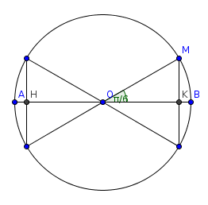
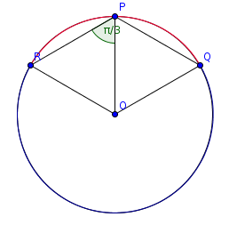

| Choisissez votre langue ! | Choose your language ! |
Une corde d'un cercle est choisie au hasard.
Quelle est la probabilité pour que la longueur de la corde soit supérieure ou égale au rayon du cercle ?
aide
Envisager deux protocoles distincts :
- Soit [AB] un diamètre quelconque du cercle. On fixe la direction de la corde perpendiculaire à [AB].
- On fixe le point P sur le cercle et toutes les cordes envisagées sont celles qui passent par P.
solution
Voir les deux protocoles de choix 'au hasard' proposés dans l'aide.
-

On peut repérer chaque corde par son point d'intersection M avec la diamètre [AB].
Les cordes cherchées sont celles pour lesquelles M ∈ [HK].
La probabilité est donc HK/AB=√3/2. -

Les cordes cherchées sont alors celles dont l'extrêmité Q appartient à l'arc de cercle dessiné en bleu.
La probabilité est donc égale à 2/3.
L'énoncé initial est imprécis.
Ceci est connu sous le nom de ' paradoxe de Bertrand'.
A chord of a circle is chosen at random.
What is the probability that the length of the chord is greater than or equal to the radius of the circle?
hint
Consider two separate protocols:
- Let [AB] be any diameter of the circle. We fix the direction of the chord perpendicular to [AB].
- We fix the point P on the circle and all the chords considered are those which pass through P.
solution
See the two 'random' choice protocols proposed in the help.
-
We can identify each chord by its point of intersection M with the diameter [AB].
The chords sought are those for which M ∈ [HK].
The probability is therefore HK/AB=√3/2. -
The chords sought are then those whose end Q belongs to the arc of a circle drawn in blue.
The probability is therefore equal to 2/3.
The initial statement is imprecise.
This is known as ' Bertrand paradox'.
|
Création Gilles Dubois - licence CC-BY-SA
Created by Gilles Dubois - licence CC-BY-SA
|
Septembre 2023
September 2023
|
Version mobile Jquery
Mobile Jquery version
|
|